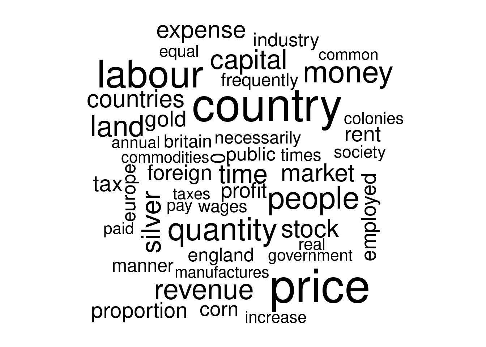
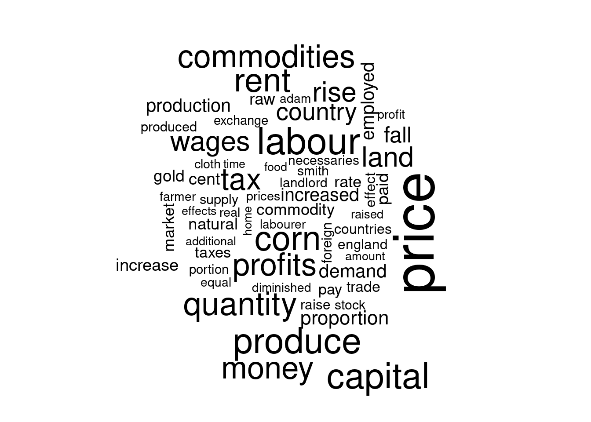
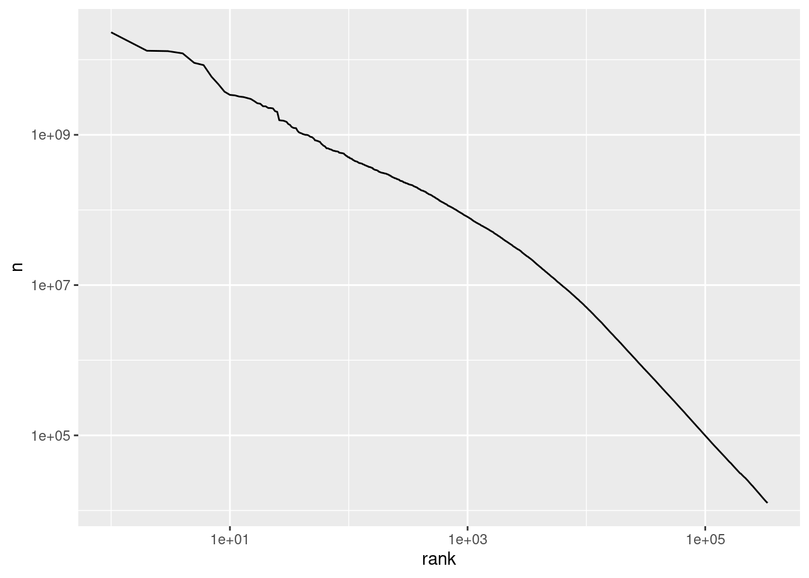

Lesson 8 Text Data
This is a ridiculously short introduction to working with text data in R using the tidytext package. For more details on this package, see Text Mining with R and Supervised Machine Learning for Text Analysis in R. For an introduction to the use of text as a data source in applied economics see Gentzkow, Kelly, & Taddy (2019).
8.1 unnest_tokens()

The Tyger by William Blake
After loading text data into R--more on that anon!--our first step is to break it down into its constitutent parts. This process is called tokenization and the resulting parts are called tokens. In most applications a token will be a word, but in some cases it might be an n-gram or a whole sentence or phrase. The tidytext function for tokenization is called unnest_tokens(). Let's try it out on a simple example.
Here is the first stanza of a famous poem by the English poet William Blake
tyger <- c('Tyger Tyger, burning bright,',
'In the forests of the night;',
'What immortal hand or eye,',
'Could frame thy fearful symmetry?')I've typed this out by hand, which certainly isn't the way that you'll usually get text data into your computer, but will suffice for this example. The vector tyger has length 4 and contains character data:
str(tyger)## chr [1:4] "Tyger Tyger, burning bright," "In the forests of the night;" ...To work with tidytext we'll first need to convert tyger into a tibble using dplyr
library(dplyr)
tyger_tbl <- tibble(line = seq_along(tyger), text = tyger)Notice that I created a tibble with two columns: the first is the line number and the second is the text contained in that line of the poem:
tyger_tbl## # A tibble: 4 × 2
## line text
## <int> <chr>
## 1 1 Tyger Tyger, burning bright,
## 2 2 In the forests of the night;
## 3 3 What immortal hand or eye,
## 4 4 Could frame thy fearful symmetry?Now we're ready to tokenize! After installing tidytext we can run the following command to generate a tibble in which each row corresponds to a token:
library(tidytext)
tyger_tbl %>%
unnest_tokens(output = word, input = text)## # A tibble: 20 × 2
## line word
## <int> <chr>
## 1 1 tyger
## 2 1 tyger
## 3 1 burning
## 4 1 bright
## 5 2 in
## 6 2 the
## 7 2 forests
## 8 2 of
## 9 2 the
## 10 2 night
## 11 3 what
## 12 3 immortal
## 13 3 hand
## 14 3 or
## 15 3 eye
## 16 4 could
## 17 4 frame
## 18 4 thy
## 19 4 fearful
## 20 4 symmetryThe first argument of unnest_tokens(), tbl, is the tibble containing our text. The second argument, output, is the name that we want to give to the column of output containing our tokens. The third argument, input, is the name of the column of tbl that contains the actual text. In our example, tbl is tyger_tbl and input is text. By default unnest_tokens() strips all punctuation and capitalization and treats words as tokens, so I've named output accordingly. Notice that unnest_tokens() has left our column line from tyger_tbl intact.
8.1.1 Exercise
Create a character vector called crocodile by typing out the eight lines of the poem How Doth the Little Crocodile from Alice in Wonderland by Lewis Carroll. The length of crocodile should be 8 so that each element of the vector corresponds to a line of the poem. After creating this vector, follow the same procedure as we used above for tyger to create a tibble with columns line and word in which each row is a token from crocodile. Inspect your results. What happened to the two exclamation points in the poem, and why is the word "Nile" no longer capitalized?
# By default unnest_tokens() strips out all punctuation and capitalization:
crocodile <- c('How doth the little crocodile',
'Improve his shining tail',
'And pour the waters of the Nile',
'On every golden scale!',
'How cheerfully he seems to grin',
'How neatly spreads his claws',
'And welcomes little fishes in',
'With gently smiling jaws!')
crocodile_tbl <- tibble(line = seq_along(crocodile), text = crocodile)
crocodile_tbl %>%
unnest_tokens(output = word, input = text)## # A tibble: 40 × 2
## line word
## <int> <chr>
## 1 1 how
## 2 1 doth
## 3 1 the
## 4 1 little
## 5 1 crocodile
## 6 2 improve
## 7 2 his
## 8 2 shining
## 9 2 tail
## 10 3 and
## # … with 30 more rows8.2 stop_words and Word Clouds
The gutenbergr package makes it easy to download books from Project Gutenberg directly into R. The Project Gutenberg id number for Adam Smith's Wealth of Nations is 3300, so we can download it as follows:
library(gutenbergr)
my_mirror <- "http://mirrors.xmission.com/gutenberg/"
smith <- gutenberg_download(3300, mirror = my_mirror)
smith## # A tibble: 34,546 × 2
## gutenberg_id text
## <int> <chr>
## 1 3300 "An Inquiry into the Nature and Causes of the Wealth of Nations"
## 2 3300 ""
## 3 3300 ""
## 4 3300 ""
## 5 3300 "by Adam Smith"
## 6 3300 ""
## 7 3300 ""
## 8 3300 ""
## 9 3300 ""
## 10 3300 ""
## # … with 34,536 more rowsAfter tokenizing with unnest_tokens(), we can use count() from dplyr to calculate the most common words in this book:
smith %>%
unnest_tokens(word, text) %>%
count(word, sort = TRUE) ## # A tibble: 10,241 × 2
## word n
## <chr> <int>
## 1 the 32240
## 2 of 24294
## 3 to 11708
## 4 and 10284
## 5 in 9637
## 6 a 6673
## 7 it 5391
## 8 which 4824
## 9 is 4685
## 10 be 3827
## # … with 10,231 more rowsnone of which has anything to do with economics! These are simply the most common words in the English language. Before carrying out text analysis, it's tupical to remove extremely common words. These are called stop words. The tidytext package contains a helpful list of these in the tibble stop_words
stop_words## # A tibble: 1,149 × 2
## word lexicon
## <chr> <chr>
## 1 a SMART
## 2 a's SMART
## 3 able SMART
## 4 about SMART
## 5 above SMART
## 6 according SMART
## 7 accordingly SMART
## 8 across SMART
## 9 actually SMART
## 10 after SMART
## # … with 1,139 more rowsWe can remove these from our Wealth of Nations tibble by using the anti_join() function from dplyr. The command anti_join(x, y) returns a tibble containing all rows of x that do not match those of y. Applying this to smith gives a much more reasonable result:
tidy_smith <- smith %>%
unnest_tokens(word, text) %>%
anti_join(stop_words) %>%
count(word, sort = TRUE) ## Joining, by = "word"tidy_smith## # A tibble: 9,714 × 2
## word n
## <chr> <int>
## 1 price 1264
## 2 country 1240
## 3 labour 1011
## 4 trade 970
## 5 produce 944
## 6 quantity 797
## 7 people 777
## 8 money 770
## 9 land 720
## 10 revenue 691
## # … with 9,704 more rowsWe can visualize the word frequencies in tidy_smith as a word cloud using the package wordcloud. The function wordcloud() takes three main arguments: words is the vector of words, freq is the vector of their frequencies, and min.freq indicates the frequency below which words will not be plotted. We can use this function to plot the words from the tidy_smith that appear at least 300 times as follows:
library(wordcloud)
wordcloud(words = tidy_smith$word, freq = tidy_smith$n, min.freq = 300)
A slightly cleaner way of writing the preceding command uses the base R function with() to avoid those pesky $ characters and is even compatible with the pipe %>%
# not run
tidy_smith %>%
with(wordcloud(word, n, min.freq = 300))8.2.1 Exercise
Visit Project Gutenberg and find the id for David Ricardo's On the Principles of Political Economy and Taxation. Follow the steps from above to make a word cloud for this book, and compare it to the one we made for The Wealth of Nations. You may need to adjust the argument min.freq in wordcloud() to obtain a wordcloud with a similar number of words.
ricardo <- gutenberg_download(33310, mirror = my_mirror)
ricardo <- ricardo %>%
unnest_tokens(word, text) %>%
anti_join(stop_words) %>%
count(word, sort = TRUE) ## Joining, by = "word"ricardo## # A tibble: 4,755 × 2
## word n
## <chr> <int>
## 1 price 1032
## 2 labour 629
## 3 produce 595
## 4 capital 593
## 5 corn 565
## 6 rent 545
## 7 quantity 527
## 8 commodities 514
## 9 money 507
## 10 profits 502
## # … with 4,745 more rowsricardo %>%
with(wordcloud(word, n, min.freq = 100))
8.3 Stemming and Removing Numbers
As we saw above, unnest_tokens() does a fair amount of clean-up by default, removing punctuation and capitalization. But sometimes it makes sense to do some additional cleaning before beginning our analysis. Let's look at the top thirty tokens from tidy_smith:
cbind(tidy_smith[1:15,], tidy_smith[16:30,])## word n word n
## 1 price 1264 countries 577
## 2 country 1240 expense 561
## 3 labour 1011 tax 513
## 4 trade 970 gold 508
## 5 produce 944 rent 495
## 6 quantity 797 foreign 486
## 7 people 777 proportion 481
## 8 money 770 profit 479
## 9 land 720 employed 459
## 10 revenue 691 corn 445
## 11 silver 661 0 440
## 12 capital 657 industry 410
## 13 time 636 europe 407
## 14 stock 601 public 407
## 15 market 582 england 402With over 400 occurrences, '0' is one of the most common tokens in The Wealth of Nations! Further down in the list you'll find '1' and '2' and indeed all the other digits. To remove these, we can modify our tidy_smith pipeline from above by setting strip_numeric to TRUE as an argument to unnest_tokens()
tidy_smith <- smith %>%
unnest_tokens(word, text, strip_numeric = TRUE) %>%
anti_join(stop_words) %>%
count(word, sort = TRUE) ## Joining, by = "word"cbind(tidy_smith[1:15,], tidy_smith[16:30,])## word n word n
## 1 price 1264 countries 577
## 2 country 1240 expense 561
## 3 labour 1011 tax 513
## 4 trade 970 gold 508
## 5 produce 944 rent 495
## 6 quantity 797 foreign 486
## 7 people 777 proportion 481
## 8 money 770 profit 479
## 9 land 720 employed 459
## 10 revenue 691 corn 445
## 11 silver 661 industry 410
## 12 capital 657 europe 407
## 13 time 636 public 407
## 14 stock 601 england 402
## 15 market 582 manner 394This is an improvement, but notice that country and countries are treated as separate tokens. Depending on our application, this may not be a sensible choice: these aren't really different words, they're merely different forms of the same word. To treat these as a single token, we can use a procedure called stemming. The function wordStem() from the R package SnowballC implements the "Porter stemmming algorithm." To stem the text of The Wealth of Nations we simply add a mutate() step to our pipeline from above:
library(SnowballC)
tidy_smith <- smith %>%
unnest_tokens(word, text, strip_numeric = TRUE) %>%
anti_join(stop_words) %>%
mutate(stem = wordStem(word)) %>%
count(stem, sort = TRUE)
cbind(tidy_smith[1:15,], tidy_smith[16:30,])## stem n stem n
## 1 countri 1817 manufactur 702
## 2 price 1341 expens 693
## 3 labour 1217 natur 663
## 4 trade 1134 silver 661
## 5 produc 1123 stock 632
## 6 time 990 market 623
## 7 tax 927 increas 589
## 8 land 915 rent 552
## 9 quantiti 869 proport 525
## 10 profit 792 gold 508
## 11 capit 788 foreign 504
## 12 peopl 783 pai 496
## 13 monei 771 equal 495
## 14 emploi 712 commod 474
## 15 revenu 705 improv 467tidy_smith %>%
with(wordcloud(stem, n, min.freq = 400))8.3.1 Exercise
Repeat the exercise from above in which you made a word cloud for Ricardo's On the Principles of Political Economy and Taxation, but this time work with stems rather than words and remove numeric tokens. How do the results change?
ricardo <- gutenberg_download(33310, mirror = my_mirror)
ricardo <- ricardo %>%
unnest_tokens(word, text, strip_numeric = TRUE) %>%
anti_join(stop_words) %>%
mutate(stem = wordStem(word)) %>%
count(stem, sort = TRUE)## Joining, by = "word"ricardo## # A tibble: 2,870 × 2
## stem n
## <chr> <int>
## 1 price 1150
## 2 labour 831
## 3 produc 811
## 4 tax 723
## 5 commod 706
## 6 profit 654
## 7 capit 626
## 8 corn 565
## 9 rent 564
## 10 quantiti 546
## # … with 2,860 more rowsricardo %>%
with(wordcloud(stem, n, min.freq = 100))8.4 Zipf's Law
The so-called "Zipf" distribution is a discrete probability mass function defined by \[ X \sim \text{Zipf}(\alpha) \iff P(X=x) = \frac{C}{x^{\alpha + 1}}, \quad x \in \{1, 2, 3, ...\} \] where \(\alpha>0\) is the parameter of the distribution and \(C\) is the normalizing constant that makes the probabilities sum to one over \(x = 1, 2, ...\) namely \[ \quad C = \left[ \sum_{k=1}^\infty \left(\frac{1}{k}\right)^{\alpha + 1}\right]^{-1}. \] What's so special about this distribution? For \(\alpha\) close to zero we have \[ P(X = x)= \frac{C}{x^{\alpha + 1}} \approx \frac{C}{x} \implies \frac{P(X=1)}{P(X=x)} \approx x. \] Now suppose that \(X\) is a probability model for a randomly-chosen word from a large corpus. In particular, let \(\{X=1\}\) denote the event that we observe the most common word in the corpus, let \(\{X=2\}\) denote the event that we observe the second most common word in the corpus, and so on. In a typical English language example, \(\{X = 1\}\) is "the," \(\{X=2\}\) is "of," and \(\{X=3\}\) is "and." The Zipf model with \(\alpha \approx 0\) from above suggests that "the" should be about twice as common as "of" and about four times as common as "and." This approximation is called Zipf's law, and it is thought to be fairly accurate in practice.
The key point is that common words are extremely common relative to less common words, so that word frequency distributions are highly right skewed. For a general Zipf distribution with parameter \(\alpha\), \[ \log P(X=x) = \log(C) - (1 + \alpha) \log(x). \] This suggests both a way of estimating the parameter \(\alpha\) and of checking whether a given set of frequencies match those implied by the Zipf distribution: we could regress log counts on a constant and the log rank. This is precisely what you'll do in the following exercise!
8.4.1 Exercise
Peter Norvig maintains a website with data from the Google Web Trillion Word Corpus. The file count_1w.txt available from http://norvig.com/ngrams/ contains a list of the 1/3 million most common words in this corpus along with their counts.
- Read
count_1w.txtinto a tibble callednorvigusingread_delim()from thereadrpackage. I suggest setting meaningful column names using the argumentcol_names. - Use
norvigto make a plot with the log rank on x-axis and log count on the y-axis. If these data come from a Zipf distribution, what shape should this relationship take? - Fit an appropriate linear regression to assess whether the counts and ranks from
norvigare consistent with Zipf's law.
library(readr)
library(ggplot2)
norvig <- read_delim('http://norvig.com/ngrams/count_1w.txt',
col_names = c('word', 'n')) %>%
mutate(rank = row_number())
norvig %>%
ggplot() +
geom_line(aes(x = rank, y = n)) +
scale_x_log10() +
scale_y_log10()
lm(log(n) ~ log(rank), norvig)##
## Call:
## lm(formula = log(n) ~ log(rank), data = norvig)
##
## Coefficients:
## (Intercept) log(rank)
## 30.434 -1.6468.5 bind_tf_idf()

Jane Austen
The term frequency (tf) of a token is a measure of how often it appears in a given document. Let's calculate the term frequency of every word in the complete novels of Jane Austen. To start we'll load these novels using the janeaustenr package:
library(janeaustenr)
austen_books()## # A tibble: 73,422 × 2
## text book
## * <chr> <fct>
## 1 "SENSE AND SENSIBILITY" Sense & Sensibility
## 2 "" Sense & Sensibility
## 3 "by Jane Austen" Sense & Sensibility
## 4 "" Sense & Sensibility
## 5 "(1811)" Sense & Sensibility
## 6 "" Sense & Sensibility
## 7 "" Sense & Sensibility
## 8 "" Sense & Sensibility
## 9 "" Sense & Sensibility
## 10 "CHAPTER 1" Sense & Sensibility
## # … with 73,412 more rowsAfter tokenizing with unnest_tokens(), we can count the occurrences of each word in each novel as follows:
austen_words <- austen_books() %>%
unnest_tokens(word, text) %>%
count(book, word, sort = TRUE)
austen_words## # A tibble: 40,379 × 3
## book word n
## <fct> <chr> <int>
## 1 Mansfield Park the 6206
## 2 Mansfield Park to 5475
## 3 Mansfield Park and 5438
## 4 Emma to 5239
## 5 Emma the 5201
## 6 Emma and 4896
## 7 Mansfield Park of 4778
## 8 Pride & Prejudice the 4331
## 9 Emma of 4291
## 10 Pride & Prejudice to 4162
## # … with 40,369 more rowsNotice that in this example I haven't removed any stop words. While words like "the" or "and" are unlikely to contain any useful information, more broadly it can be difficult to know which words can be safely treated as "unimportant" without knowing something about the context of our analysis. In a corpus of FOMC minutes we're probably interested in very different words than in a corpus of 19th centry novels! Or to put it another way: "one researcher's stop words are another's subject of interest." The notion of term frequency inverse document frequency (tf-idf) is a rule of thumb that aims to provide an empirical, rather than a priori, measure of which words are "most important" for comparing documents within a given corpus.
The inverse document frequency (idf) of a term is defined as the log of the inverse of the share of documents in a corpus that contain that term, in other words \[ \text{idf}(\text{term}) = \log\left( \frac{\# \text{Documents}}{\# \text{Documents containing term}}\right). \] Imagine a corpus of academic papers written in English, spanning all disciplines from Archaeology to Zoology. The term "the" will certainly appear in every one of these papers, so its idf is zero. In contrast, the term "heteroskedasticity" will only appear in a small fraction of the papers, those that concern econometrics or statistics. The idf of this term is high. Encountering the term "the" tells us effectively nothing about the kind of document that we're reading; encountering the term "heteroskedasticity" tells us a lot. While this is only a heuristic, it's a useful one. And it becomes even more useful when combined with the term frequency.
A term that is both common in a given document, high tf, and is only contained in a few documents, high idf, is a good candidate for an important word. This is the idea that tf-idf captures by multiplying term frequency by inverse document frequency. We can use the tidytext function bind_tf_idf() to attach term frequency, inverse document frequency, and tf-idf to austen_words as follows:
austen_words %>%
bind_tf_idf(word, book, n) ## # A tibble: 40,379 × 6
## book word n tf idf tf_idf
## <fct> <chr> <int> <dbl> <dbl> <dbl>
## 1 Mansfield Park the 6206 0.0387 0 0
## 2 Mansfield Park to 5475 0.0341 0 0
## 3 Mansfield Park and 5438 0.0339 0 0
## 4 Emma to 5239 0.0325 0 0
## 5 Emma the 5201 0.0323 0 0
## 6 Emma and 4896 0.0304 0 0
## 7 Mansfield Park of 4778 0.0298 0 0
## 8 Pride & Prejudice the 4331 0.0354 0 0
## 9 Emma of 4291 0.0267 0 0
## 10 Pride & Prejudice to 4162 0.0341 0 0
## # … with 40,369 more rowsThe first argument to bind_tf_idf() is a tidy text dataset (a tibble) with one row per term per document. In our case, this is austen_words, supplied using the pipe. The second argument is term, the name of the column of the input tibble that contains our terms. Above, this is the word column of austen_words. The next argument is document, the name of the column in our input tibble that contains the document ids. In our case this is book. Finally, n is the column of our input tibble that contains the counts of each term by document.
Sorting by tf_idf in descending order allows us to see which words are most distinctive to each document. Unsurprisingly, these turn out to be the names of the main characters from each novel!
austen_words %>%
bind_tf_idf(word, book, n) %>%
arrange(desc(tf_idf))## # A tibble: 40,379 × 6
## book word n tf idf tf_idf
## <fct> <chr> <int> <dbl> <dbl> <dbl>
## 1 Sense & Sensibility elinor 623 0.00519 1.79 0.00931
## 2 Sense & Sensibility marianne 492 0.00410 1.79 0.00735
## 3 Mansfield Park crawford 493 0.00307 1.79 0.00551
## 4 Pride & Prejudice darcy 373 0.00305 1.79 0.00547
## 5 Persuasion elliot 254 0.00304 1.79 0.00544
## 6 Emma emma 786 0.00488 1.10 0.00536
## 7 Northanger Abbey tilney 196 0.00252 1.79 0.00452
## 8 Emma weston 389 0.00242 1.79 0.00433
## 9 Pride & Prejudice bennet 294 0.00241 1.79 0.00431
## 10 Persuasion wentworth 191 0.00228 1.79 0.00409
## # … with 40,369 more rowsNotice that bind_tf_idf() calculates term frequency as a proportion rather than a count: "the number of times that a word appears in a novel given novel divided by the number of terms (words) in that novel." There doesn't appear to be a universal definition of "term frequency." Some people treat this as a count, others as the logarithm of a count plus one, and others as a proportion. The use of logarithms aims to reflect the observation that underlies Zipf's Law: the distribution of word frequencies is highly skewed.
8.5.1 Exercise
Above we used bind_tf_idf() to calculate the tf-idf for austen_words. Suppose you didn't have access to this helpful function. You could nonetheless calculate the tf-idf if austen_words "by hand" using dplyr. Write code to accomplish this, and make sure that your results match those from above.
austen_words %>%
group_by(book) %>%
mutate(total_words = sum(n)) %>%
ungroup() %>%
group_by(word) %>%
mutate(book_count = n()) %>%
ungroup() %>%
mutate(tf = n / total_words,
idf = log(length(unique(book)) / book_count),
tf_idf = tf * idf) %>%
arrange(desc(tf_idf)) %>%
select(-total_words, -book_count)## # A tibble: 40,379 × 6
## book word n tf idf tf_idf
## <fct> <chr> <int> <dbl> <dbl> <dbl>
## 1 Sense & Sensibility elinor 623 0.00519 1.79 0.00931
## 2 Sense & Sensibility marianne 492 0.00410 1.79 0.00735
## 3 Mansfield Park crawford 493 0.00307 1.79 0.00551
## 4 Pride & Prejudice darcy 373 0.00305 1.79 0.00547
## 5 Persuasion elliot 254 0.00304 1.79 0.00544
## 6 Emma emma 786 0.00488 1.10 0.00536
## 7 Northanger Abbey tilney 196 0.00252 1.79 0.00452
## 8 Emma weston 389 0.00242 1.79 0.00433
## 9 Pride & Prejudice bennet 294 0.00241 1.79 0.00431
## 10 Persuasion wentworth 191 0.00228 1.79 0.00409
## # … with 40,369 more rows8.6 Reading a Corpus into R
A corpus is a collection of text documents, for example the Federalist Papers. A classic problem in text analysis is trying to determine who wrote each of them: Hamilton or Madison. I've posted a zip archive containing text files of all 85 of the Federalist Papers on my website: https://ditraglia.com/data/federalist.zip. We can read this corpus into R using the functions ZipSource() and VCorpus() from the tm package as follows:
library(tm)
federalist_raw <- VCorpus(ZipSource('https://ditraglia.com/data/federalist.zip',
recursive = TRUE))
federalist_raw## <<VCorpus>>
## Metadata: corpus specific: 0, document level (indexed): 0
## Content: documents: 85To apply our favorite tidy tools to federalist_raw we'll first tidy the corpus
tidy(federalist_raw)## # A tibble: 85 × 8
## author datetimestamp description heading id language origin text
## <lgl> <dttm> <lgl> <lgl> <chr> <chr> <lgl> <chr>
## 1 NA 2022-06-02 09:32:07 NA NA fp01.txt en NA "AFT…
## 2 NA 2022-06-02 09:32:07 NA NA fp02.txt en NA "WHE…
## 3 NA 2022-06-02 09:32:07 NA NA fp03.txt en NA "IT …
## 4 NA 2022-06-02 09:32:07 NA NA fp04.txt en NA "MY …
## 5 NA 2022-06-02 09:32:07 NA NA fp05.txt en NA "QUE…
## 6 NA 2022-06-02 09:32:07 NA NA fp06.txt en NA "THE…
## 7 NA 2022-06-02 09:32:07 NA NA fp07.txt en NA "IT …
## 8 NA 2022-06-02 09:32:07 NA NA fp08.txt en NA "ASS…
## 9 NA 2022-06-02 09:32:07 NA NA fp09.txt en NA "A F…
## 10 NA 2022-06-02 09:32:07 NA NA fp10.txt en NA "AMO…
## # … with 75 more rowsand then remove the extraneous columns from the result
tidy(federalist_raw) %>%
select(id, text)## # A tibble: 85 × 2
## id text
## <chr> <chr>
## 1 fp01.txt "AFTER an unequivocal experience of the inefficiency of the subsist…
## 2 fp02.txt "WHEN the people of America reflect that they are now called upon t…
## 3 fp03.txt "IT IS not a new observation that the people of any country (if, li…
## 4 fp04.txt "MY LAST paper assigned several reasons why the safety of the peopl…
## 5 fp05.txt "QUEEN ANNE, in her letter of the 1st July, 1706, to the Scotch Par…
## 6 fp06.txt "THE three last numbers of this paper have been dedicated to an enu…
## 7 fp07.txt "IT IS sometimes asked, with an air of seeming triumph, what induce…
## 8 fp08.txt "ASSUMING it therefore as an established truth that the several Sta…
## 9 fp09.txt "A FIRM Union will be of the utmost moment to the peace and liberty…
## 10 fp10.txt "AMONG the numerous advantages promised by a well-constructed Union…
## # … with 75 more rowsBy default tidy.corpus() replaces linebreaks in each of the documents from the corpus with \n. We can override this behavior by setting the argument collapse. For example to completely ignore linebreaks, we could set collapse = ''. To make things a bit easier to work with, we can use str_extract() from the stringr package to create a column called paper that gives the number of the particular Federalist Paper whose text is stored in text
library(stringr)
federalist <- tidy(federalist_raw, collapse = '') %>%
select(id, text) %>%
mutate(paper = as.numeric(str_extract(id, '[:digit:]+'))) %>%
select(paper, text)
federalist## # A tibble: 85 × 2
## paper text
## <dbl> <chr>
## 1 1 "AFTER an unequivocal experience of the inefficiency of the subsisting…
## 2 2 "WHEN the people of America reflect that they are now called upon to d…
## 3 3 "IT IS not a new observation that the people of any country (if, like …
## 4 4 "MY LAST paper assigned several reasons why the safety of the people w…
## 5 5 "QUEEN ANNE, in her letter of the 1st July, 1706, to the Scotch Parlia…
## 6 6 "THE three last numbers of this paper have been dedicated to an enumer…
## 7 7 "IT IS sometimes asked, with an air of seeming triumph, what inducemen…
## 8 8 "ASSUMING it therefore as an established truth that the several States…
## 9 9 "A FIRM Union will be of the utmost moment to the peace and liberty of…
## 10 10 "AMONG the numerous advantages promised by a well-constructed Union, n…
## # … with 75 more rowsExpanding this pipeline, we can tokenize, remove stop words, and stem each of these texts as follows:
names(federalist$text) <- NULL # This is a named column; remove names to
# prevent a warning from showing with unnest_tokens()
federalist <- federalist %>%
unnest_tokens(word, text, strip_numeric = TRUE) %>%
anti_join(stop_words) %>%
mutate(stem = wordStem(word))
federalist## # A tibble: 64,114 × 3
## paper word stem
## <dbl> <chr> <chr>
## 1 1 unequivocal unequivoc
## 2 1 experience experi
## 3 1 inefficiency ineffici
## 4 1 subsisting subsist
## 5 1 federal feder
## 6 1 government govern
## 7 1 called call
## 8 1 deliberate deliber
## 9 1 constitution constitut
## 10 1 united unit
## # … with 64,104 more rows8.6.1 Exercise
What are the ten "most important" words in Federalist Papers number 12 and 24 as measured by tf-idf? Does it matter whether you work with words or stems?
federalist_words <- federalist %>%
count(paper, word, sort = TRUE) %>%
bind_tf_idf(word, paper, n)
federalist_stems <- federalist %>%
count(paper, stem, sort = TRUE) %>%
bind_tf_idf(stem, paper, n)
federalist_words %>%
filter(paper == 12) %>%
select(word, tf_idf) %>%
arrange(desc(tf_idf))## # A tibble: 589 × 2
## word tf_idf
## <chr> <dbl>
## 1 contraband 0.0167
## 2 patrols 0.0167
## 3 revenue 0.0152
## 4 trade 0.0130
## 5 duties 0.0127
## 6 taxes 0.0117
## 7 importation 0.0115
## 8 cent 0.0111
## 9 excise 0.0111
## 10 spirits 0.0111
## # … with 579 more rowsfederalist_stems %>%
filter(paper == 12) %>%
select(stem, tf_idf) %>%
arrange(desc(tf_idf))## # A tibble: 516 × 2
## stem tf_idf
## <chr> <dbl>
## 1 revenu 0.0169
## 2 contraband 0.0167
## 3 patrol 0.0167
## 4 excis 0.0166
## 5 coast 0.0141
## 6 tax 0.0131
## 7 trade 0.0130
## 8 cent 0.0111
## 9 gallon 0.0111
## 10 commerc 0.0111
## # … with 506 more rowsfederalist_words %>%
filter(paper == 24) %>%
select(word, tf_idf) %>%
arrange(desc(tf_idf))## # A tibble: 491 × 2
## word tf_idf
## <chr> <dbl>
## 1 garrisons 0.0262
## 2 dock 0.0206
## 3 settlements 0.0206
## 4 yards 0.0206
## 5 establishments 0.0168
## 6 spain 0.0146
## 7 posts 0.0141
## 8 standing 0.0139
## 9 armies 0.0134
## 10 frontier 0.0131
## # … with 481 more rowsfederalist_stems %>%
filter(paper == 24) %>%
select(stem, tf_idf) %>%
arrange(desc(tf_idf))## # A tibble: 437 × 2
## stem tf_idf
## <chr> <dbl>
## 1 garrison 0.0262
## 2 dock 0.0206
## 3 yard 0.0206
## 4 settlement 0.0174
## 5 spain 0.0146
## 6 armi 0.0137
## 7 frontier 0.0131
## 8 arsen 0.0116
## 9 western 0.0116
## 10 nearer 0.0103
## # … with 427 more rows